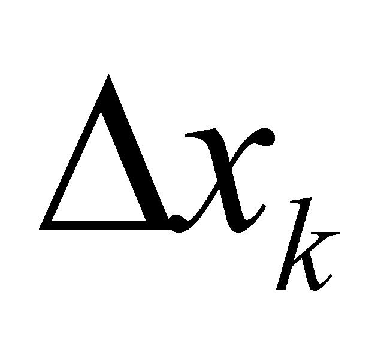

|
|
|
In chapter 4, we have seen what are the definitions of an object’s state or of an even process, as well as the types of the processual states which are coming from this kind of definition. Based on these definitions, and on the fact that the assessment of each state type is made against a reference system, and on the fact that the object whose state is assessed may be a complex object, there are also other state classes which can be defined.
When we have discussed about objects, we saw that their properties are determined first of all against an internal reference system and in this case, we are dealing with some internal properties. All the properties of an object are also determined against a reference which is outside the object and that is why they are called external properties. Let us remember the definition 3.1.3 which was given to the notion of object: The object is a finite and invariant set of qualitative attributes (properties), with simultaneous, finite and invariant distributions, on the same finite and invariant support domain, which are determined against a common internal reference system. If the set of the attributes of an object is made-up from m properties, each element xk of the common support will be associated with m values of the distributed attributes which are related to that particular element by means of m assignment relations.
According to the definition 4.2.1, all the existing (distributed) invariant attributes on an element xk of the common support, makes-up the abstract state object at the value xk of that particular support. In chapter 2, we saw that the support element may be a singular value, that is a case when we are dealing with a primary distribution, or an elementary interval of values (with an internal reference xk), and in this case we are dealing with a derived distribution (of a primary distribution). In chapter 4, we saw that the state applicable to a singular value of the support is a state S0 (state of a primary distribution element), and the one which is related to a support finite interval is a state Sn, where n is the rank of the finite difference distributed on the elementary interval (state of an element of derived distribution of rank n).
Because any of the above-mentioned states, either S0 or Sn represents a set of properties belonging to a certain element of the support attribute, all of these will be considered as local states (specific either to the support element xk, or to the elementary interval with an internal reference at xk) of the object with the above mentioned m properties.
The evaluation of the value of the local states attributes can be done, as we have previously pointed out, against a reference system inside the object, when we shall be dealing with internal (local) states, or against an external reference system, when we shall be dealing with external states (local as well).
We were previously saying that the local states are states specific to a certain distribution element, either primary or derived distribution which belong to an object. The m distributions which belong to an object Ob with m qualitative properties in set, have a finite number of elements (for the realizable distributions): the number of normal singular values corresponding to the primary distributions, or the number of elementary intervals in which the support is divided, concerning the derived distributions. In chapter 3, we saw that the elements of a distribution are elementary objects at the same time, therefore, the object Ob is an object composed from a set of elementary objects, each with its own m properties which are provided by means of the assignment relations. Since all the properties of an elementary object are specific (local) properties, they all have a common component, aspect which was presented in chapter 3, the reference value against which these properties are evaluated, that is a value which belongs to the internal reference system of the object Ob. We have also noticed in chapter 3 that this reference value valid for an isolated object has a null value (absolute reference), and for an object which deploys relations with other external objects, its value shall be established against an external reference, common to all the objects which develop mutual relations, and it becomes a relative reference. In this case, the set of objects which deploy external relations makes-up a complex object, the composition relations being created between the internal reference systems of each constitutive object, and as a result of the existence of such relations, each internal reference shall be assigned with a non-zero value. But, this means that there is a set of dependence relations deployed between the values of the internal references of the constitutive objects and the external reference, set which will make-up a new distribution, which represents the complex object.
The total amount of properties assigned to the internal RS of a complex object against the external reference makes-up an external state of this RS, and because that state is common to all the internal elements of the complex object, it will be a global state of this object.
As a conclusion, an amount which is placed inside an invariant confined surface may be characterized from two points of view - local and global. The local characterization is given by the elements of the spatial distribution of that amount inside the surface (mostly by their density), and the global one is given by the integral of this distribution (the total attribute amount distributed into the inner volume, that is the attribute stockpile), or by the internal RS of the distribution. As for the distributed processes, the local characterization is made by SEP (the element of Euler distribution), and the global one is given by the resultant of the vectors’ distribution (which is also the result of an integration).
Copyright © 2006-2011 Aurel Rusu. All rights reserved.